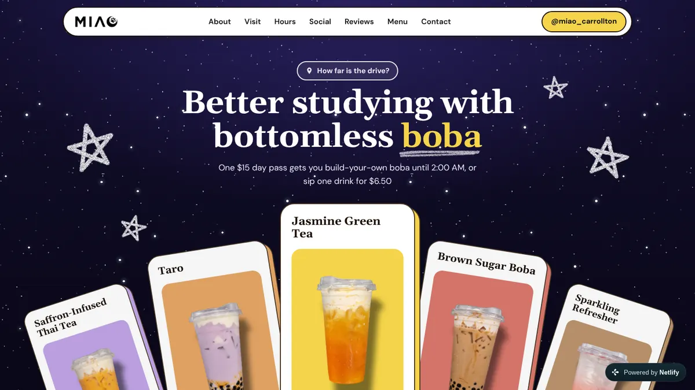
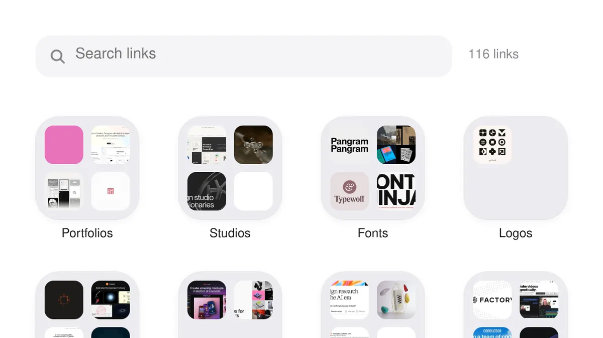
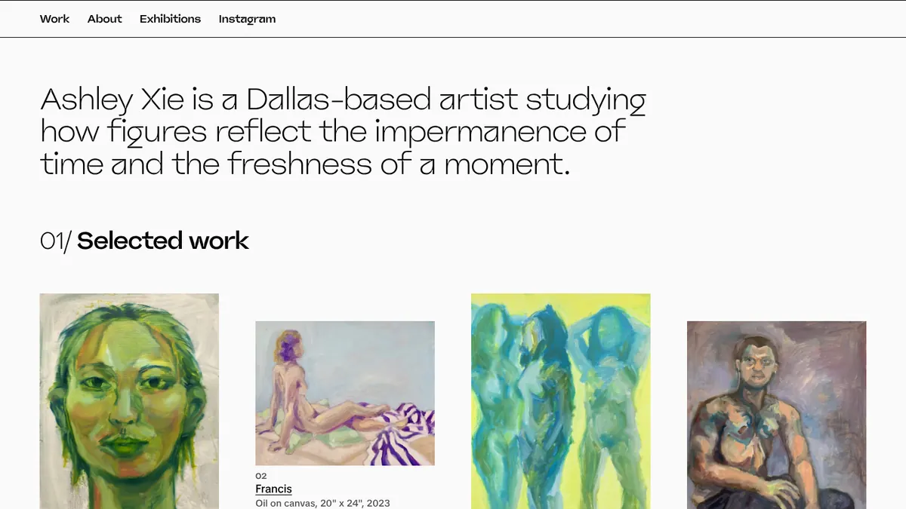

Play
-

Custom website for Miao Carrollton
Designed the site from 0 to 1 for a local business, attracting nearby college students with vibrant graphics. Passes WCAG 2.2 and includes analytics.
-

My personal link board
Consolidates design resources from across the web into clear categories with easy search, managed with a Telegram bot.
-

Painting portfolio
Presents my pieces with quirky UI and simple UX, inspired by the MoMA.
-
Playdate project
Identifies cool hangout spots that are equidistant between both users for coordinating plans.
-
Personal computing interface
Sparking whimsy in my daily desktop.